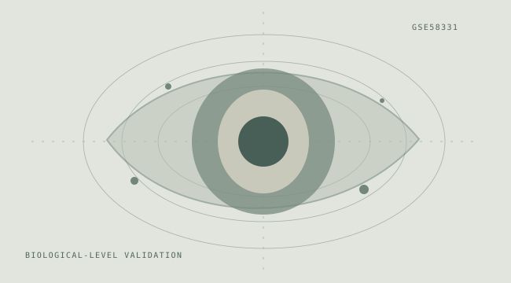

Thyroid Eye Disease Signal Lab
A small-n gene-expression case study that deliberately prioritizes independent people, consistent tissue types and a realistic interpretation of validation.

Start with the question.
Can gene-expression patterns in anterior-orbit tissue distinguish thyroid eye disease from controls when tissue type and repeated sampling are handled explicitly?
Know the data.
GEO GSE58331 contains 175 samples across tissues and disease groups. This portfolio comparison limits the input to 49 eligible anterior-orbit arrays and collapses correlated records to 43 biological subjects (22 TED, 21 controls).
Make the methods visible.
- Restrict the classification question to the same tissue type across groups.
- Identify repeated samples from the same biological subject before resampling.
- Keep preprocessing and model selection inside validation procedures.
- Examine the predictive signal in the context of the underlying cohort and older expression platform.
What it means.
The exercise illustrates why the unit of analysis matters. Training and testing on correlated arrays can make a model appear more reliable than it would be on independent people.
What it does not mean.
- The cohort is small and from an older expression platform.
- Orbital tissue is not a routine, minimally invasive diagnostic specimen.
- Independent contemporary cohorts are necessary before suggesting clinical transportability.
For implementation details, files and the project documentation, inspect the public GitHub repository ↗.